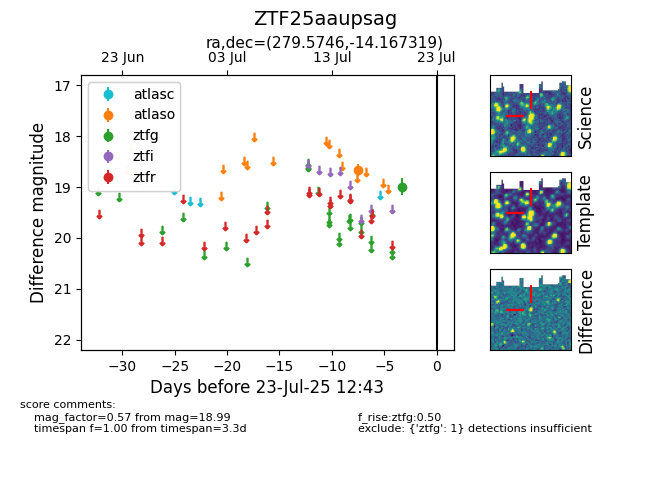

Target ZTF25aaupsag at 2025-07-23 12:43, see:
FINK: fink-portal.org/ZTF25aaupsag
Lasair: lasair-ztf.lsst.ac.uk/objects/ZTF25aaupsag
ALeRCE: alerce.online/object/ZTF25aaupsag
alt names
ZTF25aaupsag (ztf,fink)
coordinates:
equatorial (ra, dec) = (279.5746,-14.16732)
galactic (l, b) = (18.8309,-3.56371)
photometry
last atlaso=18.67, ztfg=18.99
1 atlaso, 1 ztfg detections
